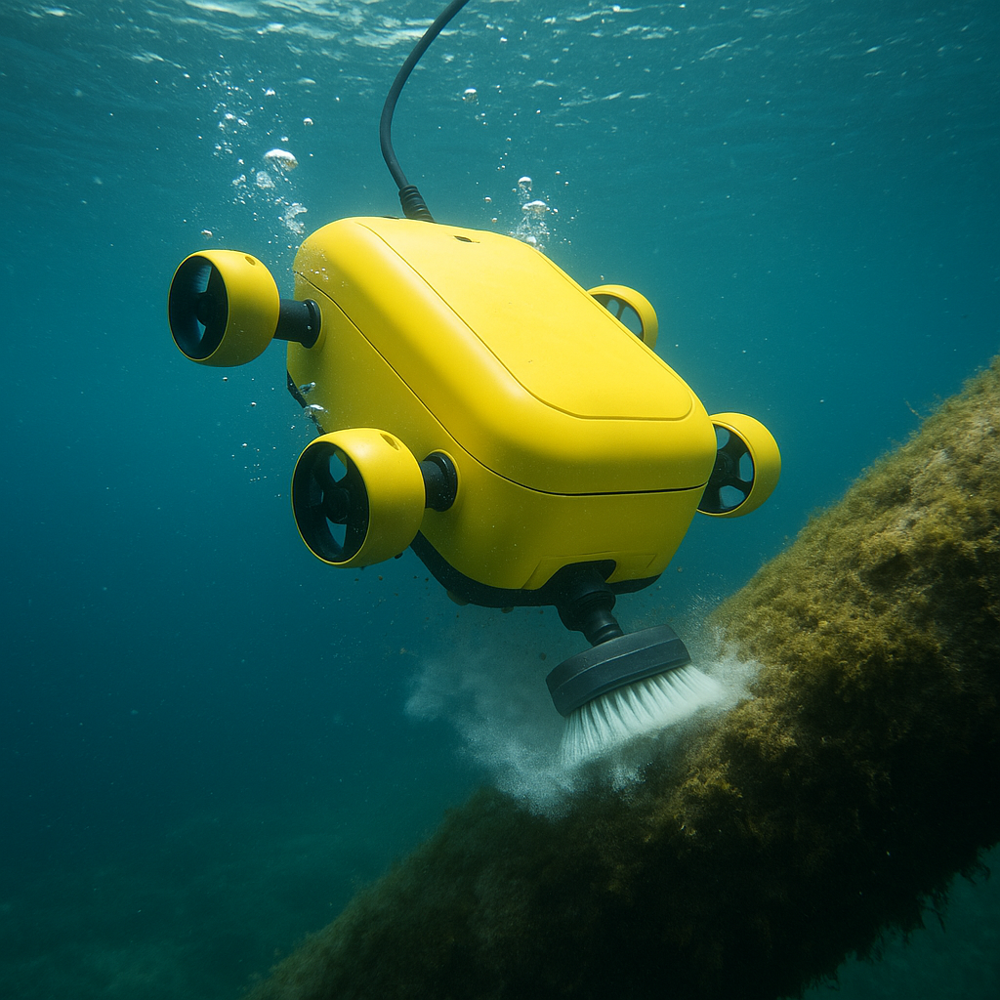
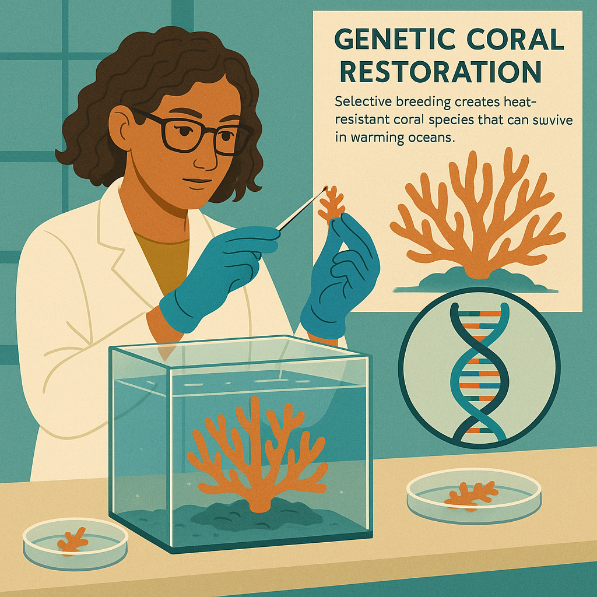
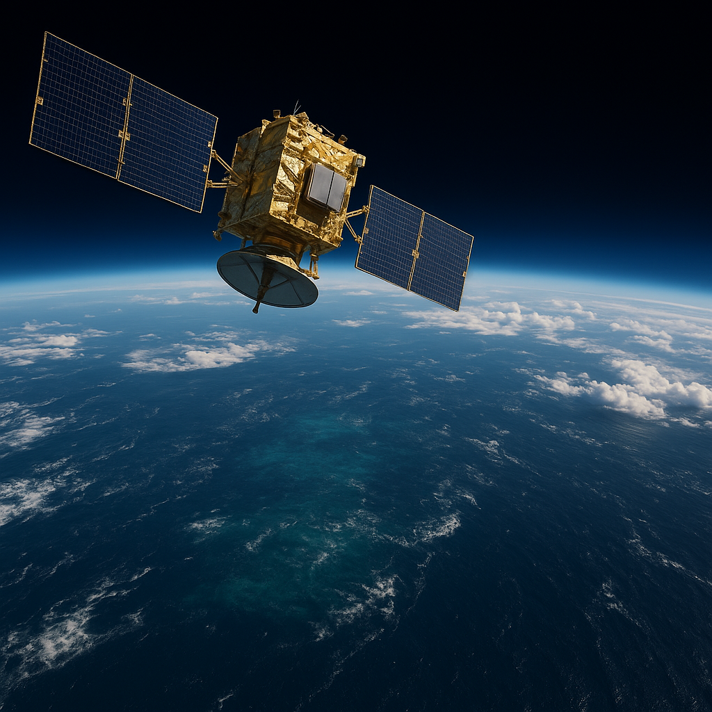
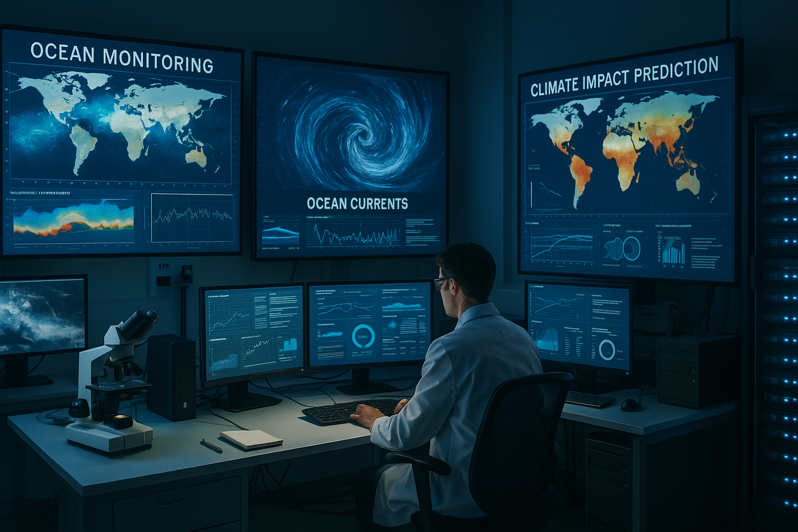

Our oceans are vital for life on Earth. But to secure a sustainable future, we must act now to protect them. Discover the challenges ahead and the innovative solutions shaping a cleaner, healthier, and thriving blue planet.
Challenges Ahead
Our oceans face unprecedented challenges that threaten marine life and human well-being. Understanding these threats is the first step toward creating effective solutions.
Plastic Pollution Crisis
Every year, 8 million tons of plastic enter our oceans, equivalent to dumping a garbage truck full of plastic every minute.
- Entangles and kills over 100,000 marine animals annually
- Breaks down into microplastics that enter the food chain
- Creates massive garbage patches like the Great Pacific Garbage Patch
Climate Change Impact
Rising temperatures and acidification are transforming ocean ecosystems:
- Ocean temperatures have increased by 0.88°C since 1900
- Ocean acidification has increased by 30% since the Industrial Revolution
- Sea levels are rising 3.3mm per year, threatening coastal communities
Overfishing & Habitat Destruction
Unsustainable fishing practices are depleting marine resources:
- 90% of large fish populations have been depleted
- Bottom trawling destroys seafloor habitats
- Bycatch kills millions of non-target species annually
Coral Reef Destruction
Coral reefs, the rainforests of the sea, are dying at alarming rates:
- 50% of coral reefs have been lost in the past 30 years
- Bleaching events are becoming more frequent and severe
- Ocean acidification prevents coral growth and repair
Critical Statistics
8M
Tons of plastic enter oceans yearly
90%
Large fish populations depleted
50%
Coral reefs lost in 30 years
2050
Year oceans may contain more plastic than fish
Future Innovations
Cutting-edge technology is revolutionizing ocean conservation. From artificial intelligence to biotechnology, these innovations are creating new possibilities for protecting our marine ecosystems.
Artificial Intelligence & Monitoring
AI-Powered Marine Monitoring
.jpeg)
Advanced algorithms analyze underwater footage to identify species and track populations in real-time.
Smart Buoy Networks

Connected sensor networks monitor water quality, temperature, and pollution across vast ocean areas.
Autonomous Systems
Ocean Cleanup Drones

Autonomous surface vessels collect plastic waste and monitor pollution levels in remote ocean areas.
Underwater Drones

Remotely operated vehicles explore deep-sea environments and map coral reefs.
Biotechnology & Restoration
3D-Printed Coral Reefs

Biodegradable structures mimic natural coral formations, providing habitat for marine life.
Genetic Coral Restoration

Selective breeding creates heat-resistant coral species that can survive in warming oceans.
Space Technology
Satellite Ocean Monitoring

Space-based sensors track illegal fishing vessels and monitor ocean temperatures from orbit.
Climate Modeling

Advanced computer models predict ocean changes and help prepare for climate impacts.
How Youth Can Help
Young people are the driving force behind ocean conservation. Your actions today will shape the future of our blue planet.
Direct Action
Beach & River Cleanups
Join or organize cleanup events in your community. Every piece of plastic removed saves marine life.
Citizen Science Projects
Contribute to scientific research by reporting marine life sightings and water quality data.
Lifestyle Changes
Reduce Plastic Consumption
Make simple swaps that have a big impact on ocean health:
- Use reusable water bottles and coffee cups
- Choose products with minimal packaging
- Bring your own shopping bags
Sustainable Seafood Choices
Support fisheries that protect ocean health and avoid overfished species.
Conclusion: Our Ocean's Future
The future of our oceans is not predetermined—it's shaped by the choices we make today. While the challenges are significant, the solutions are within our reach.
Reasons for Hope
Growing Global Awareness
Ocean conservation has become a global priority with unprecedented international cooperation.
Rapid Technological Advancement
Innovation is accelerating, providing new tools for ocean protection and restoration.
Youth Leadership
Young people worldwide are leading the charge with fresh perspectives and boundless energy.
Proven Success Stories
Marine protected areas and species recovery programs have demonstrated that positive change is possible.
The Aquaverse Mission
"Together, we can secure the future of our blue planet. By acting now, supporting sustainable solutions, and inspiring others, we can keep our oceans alive for generations to come."
Join the Mission to Save Our Aquaverse
Your voice can echo underwater. Every action ripples outward, creating waves of positive change.